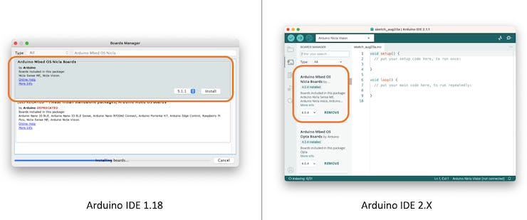
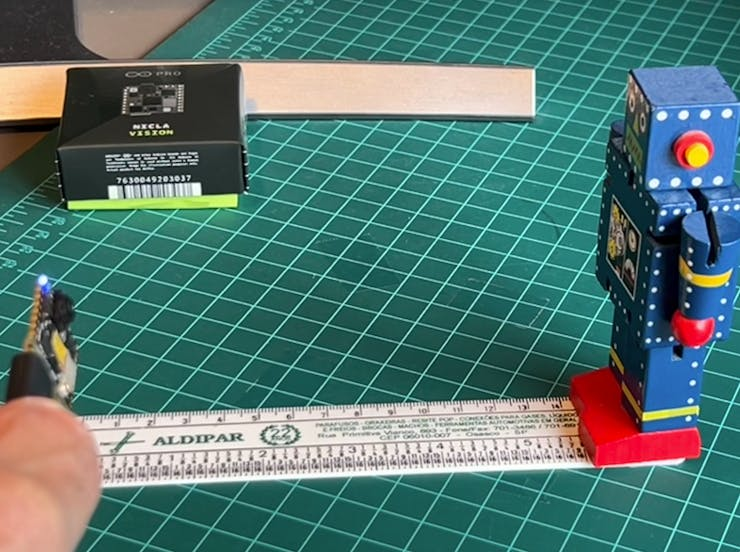
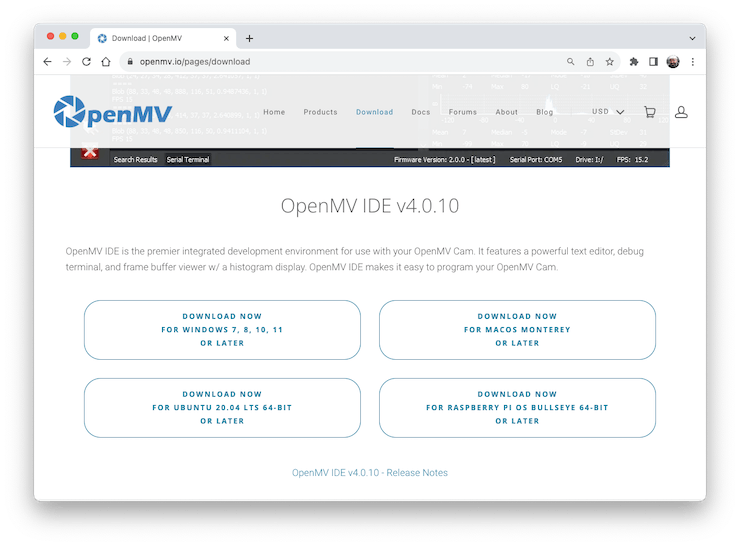
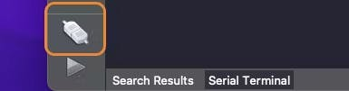
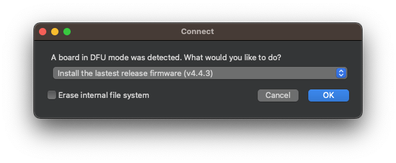
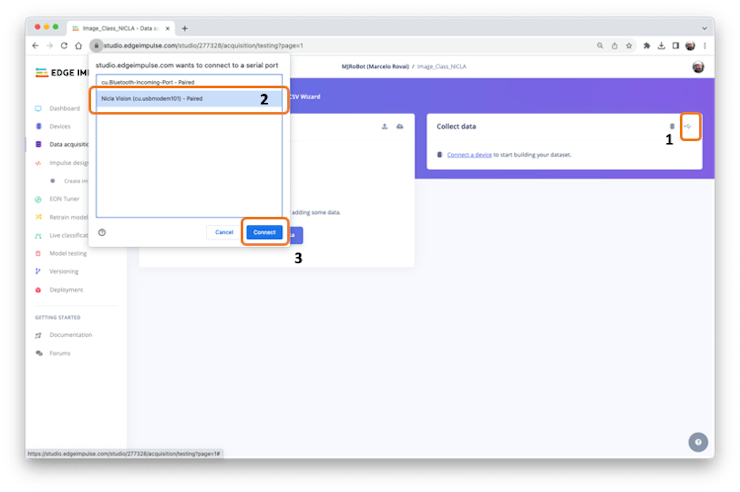
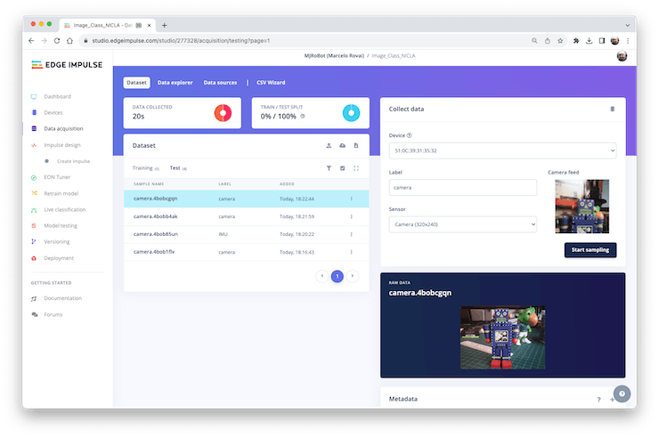
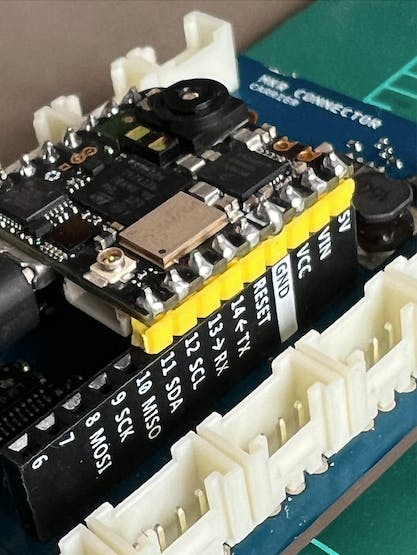

Setup
Introduzione
La Arduino Nicla Vision (a volte chiamata NiclaV) è una scheda di sviluppo che include due processori in grado di eseguire attività in parallelo. Fa parte di una famiglia di schede di sviluppo con lo stesso fattore di forma ma progettate per attività specifiche, come Nicla Sense ME e la Nicla Voice. Le Nicla possono eseguire in modo efficiente processi creati con TensorFlow Lite. Ad esempio, uno dei core di NiclaV esegue un algoritmo di visione artificiale al volo (inferenza), mentre l’altro esegue operazioni di basso livello come il controllo di un motore e la comunicazione o l’azione come interfaccia utente. Il modulo wireless integrato consente la gestione simultanea della connettività WiFi e Bluetooth Low Energy (BLE).

Hardware
Due Core Paralleli
Il processore centrale è il dual-core STM32H747, che include un Cortex M7 at 480 MHz e un Cortex M4 at 240 MHz. I due core comunicano tramite un meccanismo di Remote Procedure Call che consente di richiamare senza problemi le funzioni sull’altro processore. Entrambi i processori condividono tutte le periferiche on-chip e possono eseguire:
Sketch Arduino su Arm Mbed OS
Applicazioni Native Mbed
MicroPython / JavaScript tramite un interprete
TensorFlow Lite
Memoria
La memoria è fondamentale per i progetti di machine learning [apprendimento automatico] embedded. La scheda NiclaV può ospitare fino a 16 MB di QSPI Flash per l’archiviazione. Tuttavia, è essenziale considerare che la SRAM MCU è quella da utilizzare con le inferenze di machine learning; l’STM32H747 è di soli 1 MB, condiviso da entrambi i processori. Questa MCU ha anche incluso 2 MB di FLASH, principalmente per l’archiviazione del codice.
Sensori
Fotocamera: Una fotocamera CMOS a colori GC2145 da 2 MP.
Microfono: I’
MP34DT05è un microfono digitale MEMS omnidirezionale, ultracompatto, a basso consumo, costruito con un elemento di rilevamento capacitivo e l’interfaccia IC.IMU a 6 Assi: Dati del giroscopio 3D e dell’accelerometro 3D dall’IMU a 6 assi
LSM6DSOX.Sensore del Time of Flight: Il sensore del tempo di volo
VL53L1CBV0FYaggiunge capacità di misurazione precise e a bassa potenza alla Nicla Vision. Il laser invisibile VCSEL vicino all’infrarosso (incluso il driver analogico) è incapsulato con ottica ricevente in un piccolo modulo, tutto in uno, sotto la telecamera.
Installazione di Arduino IDE
Si inizia collegando la scheda (microUSB) al computer:
Si installa il core Mbed OS per le schede Nicla nell’IDE Arduino. Con l’IDE aperto, si va su Tools > Board > Board Manager, si cerca Arduino Nicla Vision nella finestra di ricerca e si installa la scheda.

Poi, si va su Tools > Board > Arduino Mbed OS Nicla Boards e si seleziona Arduino Nicla Vision. Con la scheda collegata alla porta USB, si dovrebbe vedere “Nicla on Port” e selezionarla.
Si apre lo sketch Blink su Examples/Basic ed lo si esegue usando il pulsante “IDE Upload”. Si dovrebbe vedere il LED integrato (RGB verde) lampeggiare, il che significa che la scheda Nicla è installata correttamente e funzionante!
Test del Microfono
Su Arduino IDE, si va su Examples > PDM > PDMSerialPlotter, si apre e si esegue lo sketch. Si apre il Plotter e si guarda la rappresentazione audio dal microfono:
Variare la frequenza del suono generato e verificare che il microfono funzioni correttamente.
Test dell’IMU
Prima di testare l’IMU, sarà necessario installare la libreria LSM6DSOX. Per farlo, si vai su Library Manager e si cerca LSM6DSOX. Si installa la libreria fornita da Arduino:

Poi, si va su Examples > Arduino_LSM6DSOX > SimpleAccelerometer e si esegue il test dell’accelerometro (si può anche eseguire Gyro e temperatura della scheda):
Test del sensore ToF (Time of Flight) [tempo di volo]
Come fatto con l’IMU, è necessario installare la libreria ToF VL53L1X. Per farlo, si va su Library Manager e si cerca VL53L1X. Si installa la libreria fornita da Pololu:

Poi, si esegue lo sketch proximity_detection.ino:
Sul monitor seriale, si vedrà la distanza dalla telecamera di un oggetto di fronte ad essa (max 4 m).

Test della Fotocamera
Possiamo anche testare la fotocamera utilizzando, ad esempio, il codice fornito in Examples > Camera > CameraCaptureRawBytes. Non possiamo vedere l’immagine direttamente, ma è possibile ottenere i dati “crudi” dell’immagine generati dalla telecamera.
In ogni caso, il test migliore con la telecamera è vedere un’immagine dal vivo. Per questo, useremo un altro IDE, OpenMV.
Installazione di OpenMV IDE
OpenMV IDE è il principale ambiente di sviluppo integrato con le telecamere OpenMV come quella su Nicla Vision. È dotato di un potente editor di testo, terminale di debug e visualizzatore di frame buffer con visualizzazione di istogrammi. Utilizzeremo MicroPython per programmare la telecamera.
Si va alla pagina di OpenMV IDE, si scarica la versione corretta per il proprio sistema operativo e si seguono le istruzioni per l’installazione sul computer.

L’IDE dovrebbe aprirsi, con il codice helloworld_1.py predefinito nella sua “Code Area”. In caso contrario, lo si può aprire da Files > Examples > HelloWord > helloword.py
Tutti i messaggi inviati tramite una connessione seriale (utilizzando print() o i messaggi di errore) verranno visualizzati sul Serial Terminal durante l’esecuzione. L’immagine catturata da una telecamera verrà visualizzata nell’area Camera Viewer (o Frame Buffer) e nell’area Histogram immediatamente sotto Camera Viewer.
Prima di collegare la Nicla all’IDE OpenMV, si deve avere la versione più recente del bootloader. Si va all’IDE Arduino, si seleziona la scheda Nicla e si apre lo sketch su
Examples > STM_32H747_System STM32H747_manageBootloader. Upload-are il codice sulla board. Il Serial Monitor vi guiderà.
Dopo aver aggiornato il bootloader, si mette la Nicla Vision in modalità bootloader premendo due volte il pulsante di reset sulla scheda. Il LED verde integrato inizierà a spegnersi e accendersi in dissolvenza [fading]. Ora si torna all’IDE OpenMV e si clicca sull’icona di connessione (Left ToolBar):

Un pop-up informerà che è stata rilevata una scheda in modalità DFU e chiederà come si desidera procedere. Per prima cosa, si seleziona Install the latest release firmware (vX.Y.Z). Questa azione installerà l’ultimo firmware OpenMV su Nicla Vision.

Si può lasciare l’opzione Erase internal file system deselezionata e cliccare su [OK].
Il LED verde di Nicla inizierà a lampeggiare mentre il firmware OpenMV viene caricato sulla scheda e si aprirà una finestra del terminale che mostrerà l’avanzamento del flashing.
Attendere che il LED verde smetta di lampeggiare in dissolvenza. Quando il processo termina, si vedrà un messaggio che dice “DFU firmware update complete!”. Premere [OK].
Quando Nicla Vison si collega alla Barra degli Strumenti, compare un pulsante verde per la riproduzione.

Notare che sul computer apparirà un’unità denominata “NO NAME”:
Ogni volta che si preme il pulsante [RESET] sulla board, viene automaticamente eseguito lo script main.py che vi è memorizzato. Si può caricare il codice di main.py sull’IDE (File > Open File...).
Questo è il codice di “Blink”, che conferma che l’HW è OK.
Per testare la telecamera, eseguiamo helloword_1.py. Per farlo, si seleziona lo script su File > Examples > HelloWorld > helloword.py,
Quando si clicca sul pulsante di riproduzione verde, lo script MicroPython (hellowolrd.py) nella “Code Area” verrà caricato ed eseguito su Nicla Vision. Sul “Camera Viewer”, si vedrà lo streaming video. Il “Serial Monitor” ci mostrerà gli FPS (fotogrammi al secondo), che dovrebbero essere circa 14 fps.
Ecco lo script helloworld.py:
# Hello World Example 2
#
# Welcome to the OpenMV IDE! Click on the green run arrow button below to run the script!
import sensor, image, time
sensor.reset() # Reset and initialize the sensor.
sensor.set_pixformat(sensor.RGB565) # Set pixel format to RGB565 (or GRAYSCALE)
sensor.set_framesize(sensor.QVGA) # Set frame size to QVGA (320x240)
sensor.skip_frames(time = 2000) # Wait for settings take effect.
clock = time.clock() # Create a clock object to track the FPS.
while(True):
clock.tick() # Update the FPS clock.
img = sensor.snapshot() # Take a picture and return the image.
print(clock.fps())In GitHub, si trovano gli script Python utilizzati qui.
Il codice può essere suddiviso in due parti:
Setup: Dove le librerie vengono importate, inizializzate e le variabili vengono definite e inizializzate.
Loop: (ciclo while) parte del codice che viene eseguita continuamente. L’immagine (la variabile img) viene catturata (un frame). Ognuno di questi frame può essere utilizzato per l’inferenza nelle Applicazioni di Apprendimento Automatico.
Per interrompere l’esecuzione del programma, premere il pulsante rosso [X].
Nota: OpenMV Cam funziona a circa la metà della velocità quando è connesso all’IDE. Gli FPS dovrebbero aumentare una volta disconnessi.
In GitHub, si trovano altri script Python. Provare a testare i sensori di bordo.
Collegamento di Nicla Vision a Edge Impulse Studio
Avremo bisogno di Edge Impulse Studio più avanti in altri esercizi. Edge Impulse è una piattaforma di sviluppo leader per il machine learning [apprendimento automatico] su dispositivi edge.
Edge Impulse supporta ufficialmente Nicla Vision. Quindi, per iniziare, si crea un nuovo progetto su Studio e vi si collega Nicla. Per farlo, si seguono i passaggi:
Scaricare l’EI Firmware più aggiornato e decomprimerlo.
Aprire il file zip sul computer e selezionare l’uploader corrispondente al sistema operativo:

Mettere Nicla-Vision in “Boot Mode”, premendo due volte il pulsante di reset.
Eseguire il codice batch specifico per il proprio sistema operativo per caricare il binario arduino-nicla-vision.bin sulla board.
Andare sul progetto sullo Studio e nella scheda Data Acquisition tab, selezionare WebUSB (1). Si aprirà una finestra; scegliere l’opzione che mostra che Nicla is paired (2) e premere [Connect] (3).

Nella sezione Collect Data della scheda Data Acquisition, si possono scegliere quali dati del sensore raccogliere.
Per esempio. IMU data:
O Image (Camera):

E così via. Si può anche testare un sensore esterno collegato all’ADC (Nicla pin 0) e agli altri sensori a bordo, come il microfono e il ToF.
Espansione della Nicla Vision Board (opzionale)
Un ultimo elemento da esplorare è che a volte, durante la prototipazione, è essenziale sperimentare con sensori e dispositivi esterni, e un’eccellente espansione per Nicla è l’Arduino MKR Connector Carrier (Grove compatible).
Lo shield ha 14 connettori Grove: cinque ingressi analogici singoli (A0-A5), un ingresso analogico doppio (A5/A6), cinque I/O digitali singoli (D0-D4), un I/O digitale doppio (D5/D6), una I2C (TWI) e una UART (Seriale). Tutti i connettori sono compatibili con 5 V.
Notare che tutti i 17 pin Nicla Vision saranno collegati agli Shield Grove, ma alcune connessioni Grove rimangono scollegate.

Questo shield è compatibile con MKR e può essere utilizzato con Nicla Vision e Portenta.

Ad esempio, supponiamo che in un progetto TinyML si desideri inviare risultati di inferenza utilizzando un dispositivo LoRaWAN e aggiungere informazioni sulla luminosità locale. Spesso, con operazioni offline, si consiglia un display locale a basso consumo come un OLED. Questa configurazione può essere visualizzata qui:

Il Grove Light Sensor è collegato a uno dei singoli pin analogici (A0/PC4), il LoRaWAN device alla UART e l’OLED al connettore della I2C.
I pin Nicla 3 (Tx) e 4 (Rx) sono collegati al connettore Serial Shield. La comunicazione UART è utilizzata con il dispositivo LoRaWan. Ecco un semplice codice per utilizzare l’UART:
# UART Test - By: marcelo_rovai - Sat Sep 23 2023
import time
from pyb import UART
from pyb import LED
redLED = LED(1) # built-in red LED
# Init UART object.
# Nicla Vision's UART (TX/RX pins) is on "LP1"
uart = UART("LP1", 9600)
while(True):
uart.write("Hello World!\r\n")
redLED.toggle()
time.sleep_ms(1000)Per verificare che l’UART funzioni, si deve, ad esempio, collegare un altro dispositivo come Arduino UNO, visualizzando “Hello Word” sul Serial Monitor. Ecco il codice.

Di seguito è riportato il codice Hello World da utilizzare con l’OLED I2C. Il driver MicroPython SSD1306 OLED (ssd1306.py), creato da Adafruit, dovrebbe essere caricato anche su Nicla (lo script ssd1306.py si trova su GitHub).
# Nicla_OLED_Hello_World - By: marcelo_rovai - Sat Sep 30 2023
#Save on device: MicroPython SSD1306 OLED driver, I2C and SPI interfaces created by Adafruit
import ssd1306
from machine import I2C
i2c = I2C(1)
oled_width = 128
oled_height = 64
oled = ssd1306.SSD1306_I2C(oled_width, oled_height, i2c)
oled.text('Hello, World', 10, 10)
oled.show()Infine, ecco uno script semplice per leggere il valore ADC sul pin “PC4” (pin A0 di Nicla):# Light Sensor (A0) - By: marcelo_rovai - Wed Oct 4 2023
import pyb
from time import sleep
adc = pyb.ADC(pyb.Pin("PC4")) # create an analog object from a pin
val = adc.read() # read an analog value
while (True):
val = adc.read()
print ("Light={}".format (val))
sleep (1)L’ADC può essere utilizzato per altre variabili del sensore, come la Temperatura.
Notare che gli script sopra (scaricati da Github) presentano solo come collegare dispositivi esterni alla scheda Nicla Vision utilizzando MicroPython.
Conclusione
Arduino Nicla Vision è un eccellente piccolo dispositivo per usi industriali e professionali! Tuttavia, è potente, affidabile, a basso consumo e ha sensori adatti per le applicazioni di machine learning embedded più comuni come visione, movimento, “fusion” di sensori e suono.
Nel repository GitHub, si trova l’ultima versione di tutti i codici utilizzati o commentati in questo esercizio pratico.